Projekte
Zwanzig Bauten und Wettbewerbe zwischen Aachen, Düsseldorf und Bonn, nach Jahr geordnet. Die Spalte „Abbildung" sagt, was das Bild im Raster zeigt: ein Foto des fertigen Gebäudes, ein Modell oder die Baustelle.
Alle Projekte
-

Schulzentrum Kerpen
-
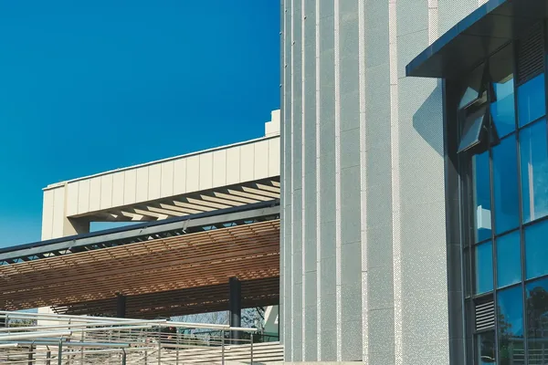
Verwaltungsgebäude Stadtwerke
-
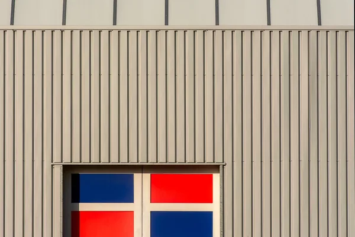
Sporthalle Wesseling
-
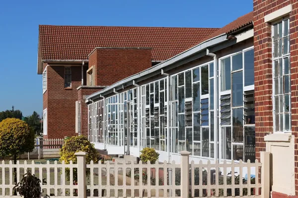
Grundschule Am Ring
-
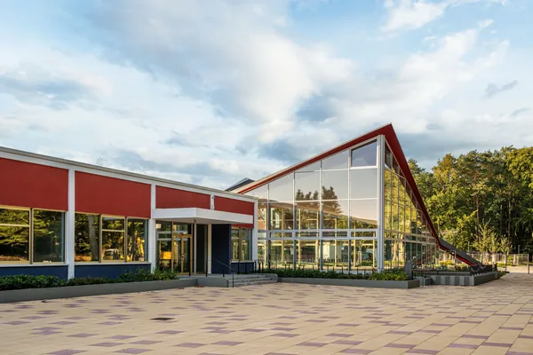
Kita Rheinufer
-
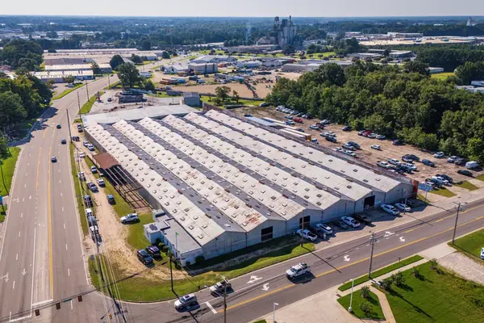
Produktionshalle Frechen
-
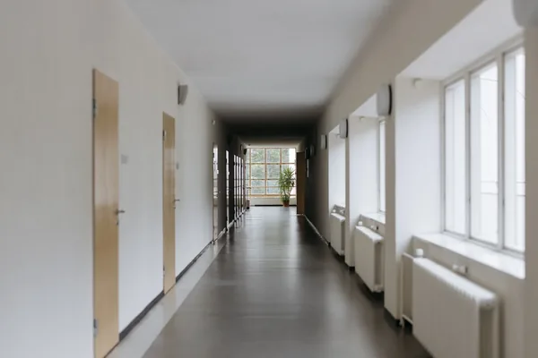
Gesamtschule Nord
-
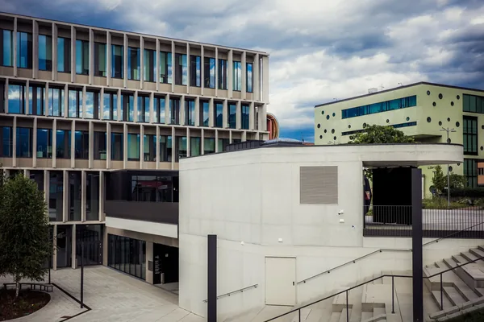
Rathaus-Anbau Pulheim
-
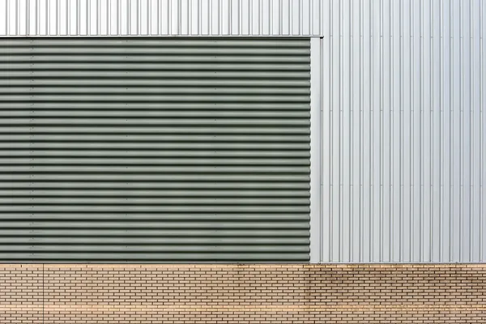
Logistikhalle Ost
-

Quartiersschule Düsseldorf
-
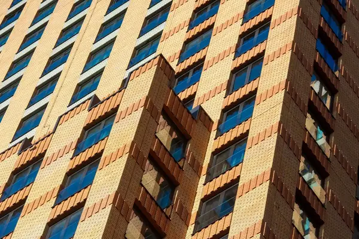
Bürogebäude Kalk
-
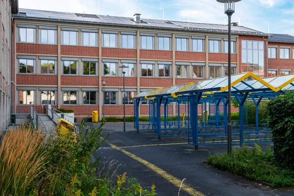
Berufskolleg Süd
-
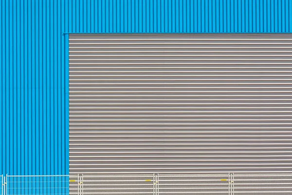
Feuerwache Bergisch Gladbach
-

Verwaltungszentrum Aachen
-
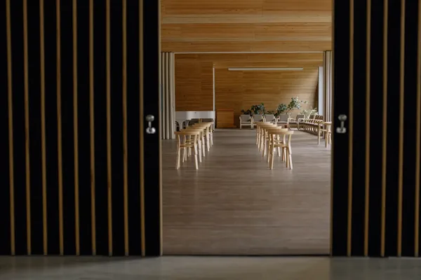
Mensa Gymnasium Brühl
-
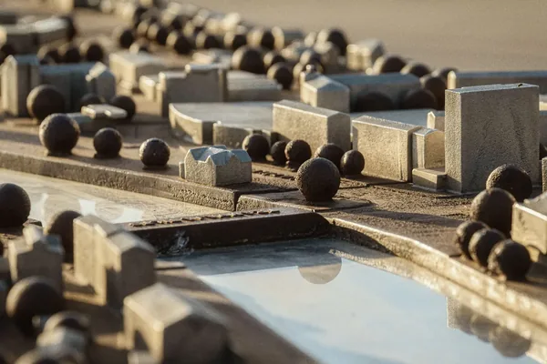
Kita Sonnenhang
-
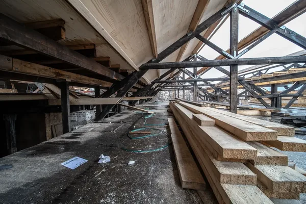
Kita Waldstraße
-
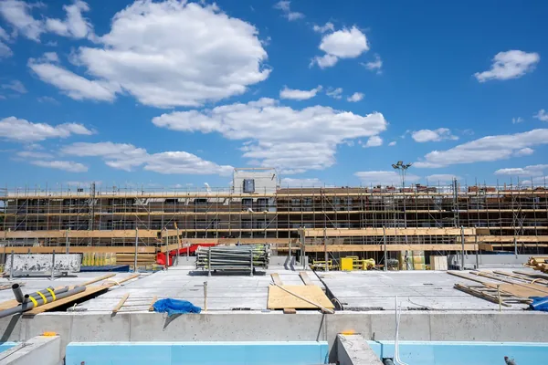
Grundschule Troisdorf
-
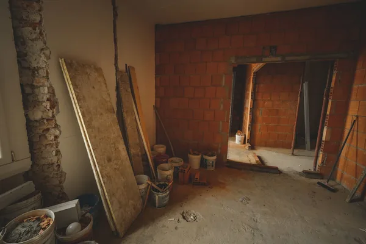
Gewerbehof Mülheim
-
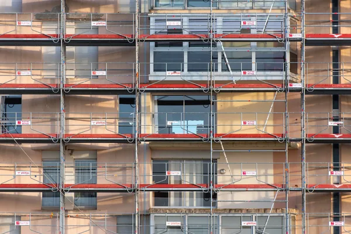
Bürgerhaus Rösrath
| Nr | Projekt | Ort | Jahr | Typ | Maßnahme | Abbildung |
|---|---|---|---|---|---|---|
| 01 | Schulzentrum Kerpen | Kerpen | 2026 | Wettbewerb | Wettbewerb, 1. Preis, realisiert | Foto |
| 02 | Verwaltungsgebäude Stadtwerke | Bonn | 2025 | Verwaltung | Neubau | Foto |
| 03 | Sporthalle Wesseling | Wesseling | 2025 | Gewerbe | Neubau | Foto |
| 04 | Grundschule Am Ring | Köln-Ehrenfeld | 2024 | Bildung | Umbau und Erweiterung | Foto |
| 05 | Kita Rheinufer | Köln-Poll | 2024 | Bildung | Neubau | Foto |
| 06 | Produktionshalle Frechen | Frechen | 2024 | Gewerbe | Neubau | Foto |
| 07 | Gesamtschule Nord | Leverkusen | 2023 | Bildung | Erweiterung | Foto |
| 08 | Rathaus-Anbau Pulheim | Pulheim | 2023 | Verwaltung | Anbau | Foto |
| 09 | Logistikhalle Ost | Hürth | 2023 | Gewerbe | Neubau | Foto |
| 10 | Quartiersschule Düsseldorf | Düsseldorf | 2023 | Wettbewerb | Wettbewerb, 3. Preis | Modell |
| 11 | Bürogebäude Kalk | Köln-Kalk | 2022 | Gewerbe | Neubau | Foto |
| 12 | Berufskolleg Süd | Bonn | 2022 | Bildung | Sanierung | Foto |
| 13 | Feuerwache Bergisch Gladbach | Bergisch Gladbach | 2022 | Verwaltung | Neubau | Foto |
| 14 | Verwaltungszentrum Aachen | Aachen | 2022 | Wettbewerb | Wettbewerb, 1. Preis, realisiert | Foto |
| 15 | Mensa Gymnasium Brühl | Brühl | 2021 | Bildung | Neubau | Foto |
| 16 | Kita Sonnenhang | Erftstadt | 2021 | Bildung | Neubau | Modell |
| 17 | Kita Waldstraße | Köln-Dellbrück | 2020 | Bildung | Neubau, Holzbau | Baustelle |
| 18 | Grundschule Troisdorf | Troisdorf | 2020 | Bildung | Anbau | Baustelle |
| 19 | Gewerbehof Mülheim | Köln-Mülheim | 2019 | Gewerbe | Umbau | Baustelle |
| 20 | Bürgerhaus Rösrath | Rösrath | 2019 | Verwaltung | Sanierung | Baustelle |